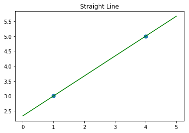
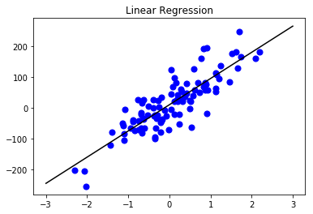
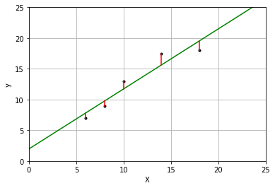

###导入线性回归模型
import numpy as np
import matplotlib.pyplot as plt
from sklearn.linear_model import LinearRegression
%matplotlib inline
X = [[1], [4]] ###两个点的横坐标
y = [3, 5] ###两个点的纵坐标
lr = LinearRegression().fit(X, y)
z = np.linspace(0, 5, 20)
plt.scatter(X, y, s= 50) ###参数s设置点的大小
plt.plot(z, lr.predict(z.reshape(-1, 1)), c='green')
plt.title("Straight Line")
plt.show()

print("y = {:.4f}".format(lr.coef_[0]),"x","+{:.4f}".format(lr.intercept_))
y = 0.6667 x +2.3333
import numpy as np
import matplotlib.pyplot as plt
###首先生成数据集
from sklearn.datasets import make_regression
X ,y = make_regression(n_samples=100, n_features=1,
n_informative=1, noise=50, random_state=1)
from sklearn.linear_model import LinearRegression
###拟合
reg = LinearRegression()
reg.fit(X, y)
z = np.linspace(-3, 3, 200).reshape(-1, 1)
plt.scatter(X, y, c='blue', s=50)
plt.plot(z, reg.predict(z), c='k')
plt.title("Linear Regression")
plt.show()

###加载糖尿病数据集
from sklearn.datasets import load_diabetes
X, y = load_diabetes().data, load_diabetes().target
from sklearn.model_selection import train_test_split
X_train, X_test, y_train, y_test = train_test_split(X, y, random_state=8)
from sklearn.linear_model import LinearRegression
lr = LinearRegression().fit(X_train, y_train)
print("训练数据集得分：{:.3f}".format(lr.score(X_train, y_train)))
print("测试数据集得分：{:.3f}".format(lr.score(X_test, y_test)))
训练数据集得分：0.530
测试数据集得分：0.459
X = [[6], [8], [10], [14], [18]]
y = [[7], [9], [13], [17.5], [18]]
from sklearn.linear_model import LinearRegression
model = LinearRegression()
model.fit(X, y)
X2 = [[0], [10], [14], [25]]
y2 = model.predict(X2)
###残差
yr = model.predict(X)
%matplotlib inline
import matplotlib.pyplot as plt
plt.plot(X, y, 'k.')
plt.plot(X2, y2, 'g-')
for idx, x in enumerate(X):
plt.plot([x, x], [y[idx], yr[idx]], 'r-')
plt.xlabel("X")
plt.ylabel("y")
plt.axis([0, 25, 0, 25])
plt.grid(True)
plt.show()
